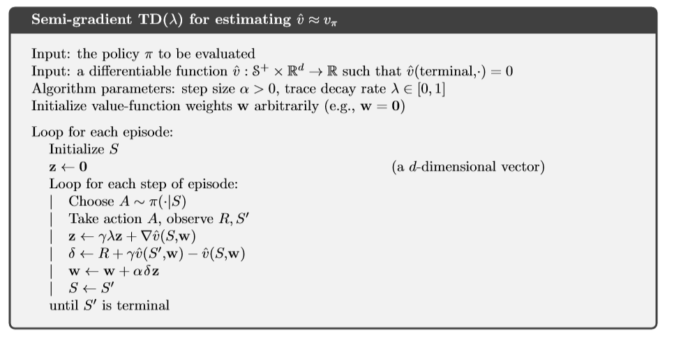
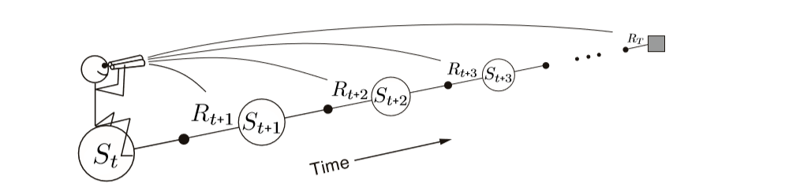
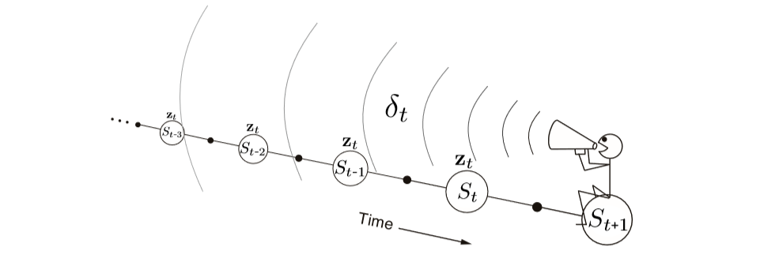

In this post I am going to talk about how Eligbility traces concept is used in different reinforcement learning algorithmss.
Eligibility traces is one of the most important concepts in reinforcement learning. Almost all famous RL algorithms use the idea of eligibility traces.
The basic idea of eligibility traces is that it starts working when some weight w is used to estimate a value. It starts to decrease with a fixed amount decided by the parameter λ which is between 0 and 1. Before the trace reaches zero, if there occurs a TD error then learning occurs for the weight w.
Another difference is that Monte Carlo, TD methods usually have a forward view which depends on a future event and updates are made by looking forwardly. On the other hand, eligibility traces is a method which has a backward view. Current TD error is used for learning, and previously visited states are looked by using an eligibility trace.
I will talk about TD(λ) algorithm to further explain eligibility trace. This is not an offline algorithm which means that updates are not made only at the end of the episode. In this algo, updates and learning is done at each step in an episode. Eligibility trace in this case can be considered as a vector zt which has the same number of components as that of the weights vector w. zt can be seen as a short term memory as mostly it ends before the episode.
In TD(λ), this vector is initialized as zero and then incremented using value gradient. To decrease the vector, we use a discounted value defined as γλ. Its equation can be seen as follows: zt = γλzt−1 +∇v(St,wt), 0 ≤ t ≤ T, with zt being the eligibility trace vector, ∇v is the value gradient and γλ is used to make it fade away with each step.
The TD error in this algorithm is defined as δt = Rt+1 + γˆ v(St+1,wt)−ˆ v(St,wt)
Weight vector updates also depends now on eligibility trace vector: wt+1 = wt + αδtzt
The complete algorithm for TD(λ) can be seen in the following image:
A major difference in this algorithm can be seen which is that weights update is dependent upon the current TD error. This difference accounts for the fact that we are actually looking backward in this algorithm instead of looking forward.
The following images can be used to differentiate between forward and backward views:
 As it can be seen in the forward view image that we decide to update each state by looking or estimating future rewards and states. Contrary to this, in backward view diagram, it can be seen that update is calculated using TD error and eligibility traces of previous states.
This dance between TD error and eligibility traces helps to choose a more efficient method while using Monte Carlo and TD methods. It also helps while dealing with tasks in which we have delayed rewards. Using TD methods with non-Markov or partially Markov tasks is not beneficial in most cases but if we utilize the idea of eligibility traces then it will help to use the advantages of TD methods in these non-Markov tasks.
One of the computational advantages of eligibility traces is that it is only a single vector. Instead of storing n different feature vectors as in n-step methods, eligibility trace only needs one vector. Learning also occurs continuously instead of waiting for some number of steps. It may be computationally expensive than one step methods, but they offer fast learning. Specially in cases when rewards are delayed by many steps. In online problems, it is best to use eligibility traces as data is mostly scarce and cannot be processed again and again. When there is a limited amount of data, using eligibility traces is more beneficial than using one step methods.
Eligibility traces also help in using Monte Carlo methods for online and continuous problems which do not have any episodes. To conclude, I would say using eligibility traces make the algorithms to generate a more generalized result.
This post was inspired from the book “Reinforcement Learning” by Richard S. Sutton and Andrew G. Barto.
References:
1. All images in this post are also from the book “Reinforcement Learning” by Richard S. Sutton and Andrew G. Barto.